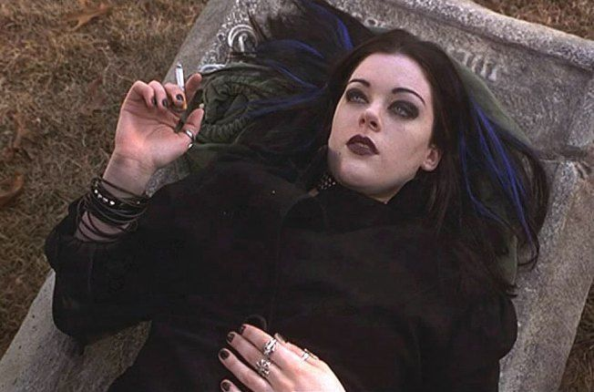

Tes copines arrivent toutes les trois en sautillant allègrement. Aude et Soline se chamaillent en pouffant de rire devant le sms d'un certain Cyprien que Soline a reçu. Elle met fin aux commentaires espiègles d'Aude en pliant le téléphone à clapet et fait tinter les perles de verre qu'elle a accrochées à l'antenne. Aude a un peu d'avance sur les garçons. En claquant des doigts, tout un harem l'éventerait et la porterait où elle le souhaite en la nourrissant de succulents petits mets ! Soline prend le chemin d'Aude en cultivant des relations bourgeonnantes avec plusieurs prétendants. Emma quant à elle, la plus gothique d'entre vous, ne se montre jamais avec qui que ce soit. Elle aurait eu plusieurs histoires, mais tu ne sais jamais ce qui est de l'ordre de la vérité et de l'extrapolation.

De ton côté, tu es une véritable timide maladive doublée d'un mutisme congénital patent. Les conversations avec les êtres hors de ton cercle sont rares et anecdotiques. Pourtant, dans ta tête, il se joue tous les jours des drames et des épopées virevoltantes. Tu rêves de voyages, de tout recommencer ailleurs, d'aller là où personne ne te connaît et de te recomposer une identité. Loin de tous les préjugés et toutes les paroles qui ont décidé que tu n'évoluerais jamais.
Alors même si tes copines insistent pour aller à Cellules Grises, la librairie fantastique, ou bien à Anaconda, la bijouterie mystique, en premier, tu sens qu'il faut que tu tu t'imposes. Que tu oses. Car elles ont déjà leurs vies, et toi tu es toujours à la traîne...
Et puis tu n'es pas sûre mais tu crois que tu as eu un petit coup de cœur récemment. Ca fait quelques mois que tu l'observes du coin de l’œil au lycée... Vincent, le guitariste parisien qui s'est retrouvé comme par hasard ici, dans cette terre de feu et de jugements. Ici les gens sont abrasifs. S'ils ne t'aiment pas, ils te le font bien comprendre. S'ils t'ont dans le collimateur, prépare-toi à être leur souffre-douleur toute l'année. Tu as vécu tout ça au collège. Alors peut-être qu'aujourd'hui tu n'oses plus aller vers les autres ou t'exprimer franchement par peur de redevenir la cible de toutes les moqueries. Mais tu as aussi envie de vivre. De t'extirper de ta mélasse de mélancolie. Tu t'es engoncée dans ce lourd manteau pendant tout le collège et la 2nde. Il est temps de détricoter cette pèlerine de honte et de tristesse.
Tu prends les filles par la main, et tu leur dis que tu cherches absolument à te procurer l'album d'Evanescence. Tu as entendu " Bring me to life " et cette chanson a résonné dans ton petit cœur de gothique romantique timorée, et il y a deux jours c'est " My immortal " qui est passée à la radio. Tu as lâché une ou deux larmes et tu as piqué 5€ dans le porte-monnaie de ta mère, 5€ dans celui de ton père et 5€ dans ta tire-lire pour te procurer le Graal, " Fallen ", leur premier album. Et puis, soyons honnêtes... ça te fait aussi une excuse pour revoir Vincent en dehors des cours. Comme vous n'êtes pas dans la même classe, tu ne le croises qu'aux récréations. Avec sa guitare et ses yeux bleus, il fend la cour d'un regard et la mer d'élèves se scinde en deux. C'est un magicien. Tu as terriblement envie de plonger dans l'océan de son regard. De parler musique avec lui, et plus si affinités...
Tes copines te suivent, pas mécontentes de revoir Vincent elles aussi. Tu ne comprends pas qu'Aude ne soit toujours pas sortie avec lui d'ailleurs. C'est une de tes peurs, mais il faut quand même que tu essayes de vivre ta vie.
Tu convaincs Emma avec quelques mots-clés sur Evanescence : gothique, voix féminine, guitares lourdes, dépression. Elle est conquise en deux minutes chrono. Parfait. Pendant qu'Emma écoutera l'album d'Evanescence à la borne, il faudra que tu ailles parler à Vincent... Mais comment te débarrasser d'Aude et de Soline ? Elles seront trop belles, trop lumineuses, et toi tu n'auras pas un seul instant, une seule phrase à lui offrir.
" Les filles (dis-tu en direction des deux consoeurs), vous avez des cd en tête à écouter ou vous préférez passer par les Galeries Lafayette d'abord ? "
Leurs visages s'illuminent. Elles ne peuvent pas résister au rayon maquillage des Galeries. Même si c'est juste pour s'extasier devant un rouge à lèvre trop onéreux ou un mascara aux promesses fallacieuses.
Elles entrent dans la première boutique pendant qu'Emma et toi continuez le long des quais pour mieux tourner dans la petite galerie au charme suranné. Vous entrez dans le passage éclairé à la lumière artificielle, vos pas résonnent sur le marbre rose typique de la région. Ton cœur s'accélère car tu sais que tu auras deux minutes en tête à tête avec Vincent. Les portes automatiques de Madison Nuggets s'ouvrent et un univers de passion naissante s'offre à toi. Tu guides Emma jusqu'à la borne et scannes le cd d'Evanescence après lui avoir promis monts et merveilles (c'était pas nécessaire, tu te doutes qu'il est génial). Enfin libre ! Tu erres dans les rayons, passes devant la partie librairie où des nouvelles féeriques de Tolkien sont mises en avant. Tu lorgnes dessus et poursuis ta quête. L'atmosphère se charge d'une électricité étrange... Ton anticipation est devenue presque érotique. Tu as imaginé des dizaines de scénarios possibles. Il est en train de ranger des cd et tu lui poses une question musique. Facile. Il est à la caisse et là, l'interaction peut être plus courte et superficielle s'il y a du monde derrière toi... Pire, il est dans la réserve et tu dois essayer de nouer naturellement la conversation avec lui alors que tu n'as aucun support pour le faire. Tu pries pour qu'il fasse du rayonnage partie cd.
Bingo ! Tu aperçois de loin sa silhouette, ses cheveux mi-longs rassemblés en un chignon haut. Tu fonds. Tu sens ton cœur s'accélérer dangereusement et tu entends les voix d'Aude et Soline en arrière-plan. Mince, elles ont déjà fini leur lèche-vitrine ! Tu aurais dû leur filer ton argent de poche pour gagner un peu de temps avec l'élu de ton cœur. Les premières notes de " Knockin' on Heaven's door "" résonnent dans tout le magasin. C'est la chanson que Vincent joue le plus au lycée. Tu la connais par cœur à cause de lui. Tu aimerais secrètement la chanter à la fin de l'année avec lui, et pouvoir lui communiquer par télépathie tes sentiments. En attendant, tu...